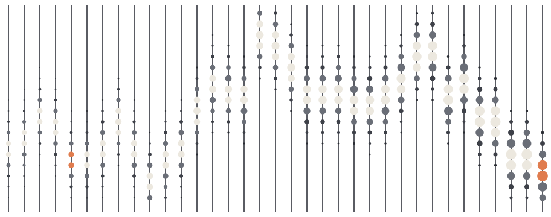

In 1202 Fibonacci's Liber Abaci taught merchants to count before they traded. We still do: data, code, tests and execution for systematic traders.
Out of sample, or it doesn't count.

data · code · test · trade

In 1202 Fibonacci's Liber Abaci taught merchants to count before they traded. We still do: data, code, tests and execution for systematic traders.
Out of sample, or it doesn't count.